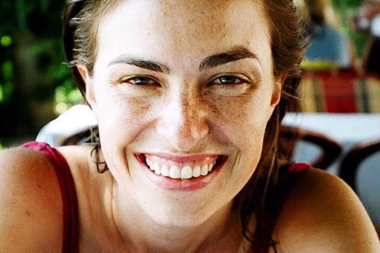

Chương 7

ể từ khi chuyển đến sống cùng nhau trong một xe lưu động suốt mùa hè sau khi tốt nghiệp trung học, Chrisann Brennan đã khắc họa nên câu chuyện về cuộc đời Jobs. Khi Jobs trở về từ Ấn Độ vào năm 1974, họ đã dành nhiều thời gian bên nhau tại trang trại của Robert Friedland. "Steve rủ tôi đến ở đó, chúng tôi lúc đó còn trẻ, phóng túng và tự do", bà nhớ lại. "Có một nguồn năng lượng ở đó hối thúc con tim tôi".
Khi họ trở lại Los Altos, mối quan hệ giữa họ đơn thuần chỉ là bạn bè thân thiện. Jobs sống ở nhà và làm việc ở Atari; còn Brennan có một căn hộ nhỏ và dành nhiều thời gian ở trung tâm thiền của Kobun Chino. Đầu năm 1975, cô bắt đầu mối quan hệ mới với một người bạn khá thân của hai người, Greg Calhoun. “Cô ấy yêu Greg nhưng thỉnh thoảng vẫn qua lại với Jobs”.
Elizabeth Holmes cho biết. "Chuyện đó xảy ra khá thường xuyên. Chúng tôi vẫn thường làm thế, đó là những năm bảy mươi mà.”
Calhoun từng học ở Reed cùng Jobs, Friedland, Kottke và Holmes. Giống như nhiều người khác, Calhoun hứng thú với văn hóa tâm linh phương Đông, rời trường Reed, anh đến sống tại nông trang của Friedland trong một cái nhà nhỏ tí như cái chuồng gà, đã được sửa sang bằng cách nâng nền bằng gạch xỉ và thêm một gác xép bên trong. Mùa xuân năm 1975, Breannan chuyển đến ở chung với Calhoun, và năm tiếp theo họ đã quyết định sẽ thực hiện một cuộc hành hương đến Ấn Độ. Jobs khuyên Calhoun không nên mang Brennan đi cùng, vì rằng cô ấy sẽ làm hỏng nhiệm vụ tâm linh của anh, nhưng họ vẫn quyết đi chung với nhau. “Tôi bị ấn tượng với những điều đã xảy ra trên hành trình Steve đến Ấn Độ, vì thế tôi cũng muốn đến đó”. Brennan nói.
Chuyến đi của họ thực sự là một hành trình gian khổ, khởi hành từ tháng 3 năm 1976 và kéo dài gần một năm. Có lúc họ hết sạch tiền, vì thế Calhoun đi nhờ xe tới Tehran, Iran để dạy tiếng Anh, còn Brennan ở lại Ấn Độ. Khi khóa giảng dạy của Calhoun kết thúc, họ đi nhờ xe tới Afghanistan để gặp nhau. Nhưng cũng từ đó, mọi chuyện đã thay đổi.
Sau một thời gian, mối quan hệ giữa hai người trở nên lạnh nhạt, và họ từ Ấn Độ về mà không đi cùng nhau. Vào mùa hè năm 1977, Brennan chuyển đến Los Altos và sống một thời gian trong một túp lều trên mảnh đất của trung tâm Thiền Kobun Chino. Lúc này, Jobs đã ra ở riêng, ông chung với Daniel Kottke bỏ 600 đô-la mỗi tháng để thuê ngôi nhà trong một trang trại ngoại ô Cupertino. Đó là cuộc sống kỳ lạ của những thanh niên hippie phóng khoáng, tôn thờ tự do, trong một căn nhà mặt đường ở Rancho Suburbia. "Căn nhà có bốn phòng ngủ, và thỉnh thoảng chúng tôi cho những kẻ lập dị, trong đó có cả một vũ nữ thoát y, thuê phòng", Jobs nhớ lại. Kottke không thể lý giải được vì sao Jobs không thuê căn hộ cho riêng mình, khi ông hoàn toàn có khả năng chi trả.
"Tôi nghĩ có lẽ ông ấy muốn có người ở cùng," Kottke suy đoán.
Mặc dù không thường xuyên liên lạc với Jobs trước đó, nhưng Brennan đã nhanh chóng chuyển đến ở với Jobs. Việc sắp xếp chỗ ở giống như trong một vở hài kịch Pháp. Căn nhà có hai phòng lớn và hai phòng nhỏ. Dĩ nhiên Jobs ở một phòng lớn, và Brennan ở phòng còn lại. “Hai phòng ở giữa giống như phòng dành cho trẻ em, tôi không thích cả hai phòng đó, vì thế tôi ngủ trên một tấm đệm ở phòng khách”. Kottke nói. Họ dành một phòng nhỏ làm không gian thiền định và chơi ma túy, giống như căn gác xép cũ hồi ở Reed. Họ chất đầy vào phòng các tấm xốp lấy từ những thùng Aplle. “Trẻ con hàng xóm thỉnh thoảng ghé qua và chúng tôi lùa chúng vào đó chơi, vui tuyệt,” Kottke nói. “Nhưng sau đó Chrisann đem về mấy con mèo, chúng tè bậy lên những tấm xốp, thế là chúng tôi phải bỏ đi hết”.
Sống trong cùng một nhà, Brennan và Jobs gần gũi nhiều hơn. Vài tháng sau, cô mang thai.
“Steve và tôi đã có một mối quan hệ phức tạp trong suốt năm năm, trước khi tôi có thai", bà nhớ lại. "Chúng tôi đã không biết làm thế nào để đến với nhau và cũng không biết làm thế nào để rời xa nhau". Khi Greg Calhoun đi nhờ xe từ Colorado đến thăm họ vào Lễ Tạ ơn năm 1977, Brennan nói với Calhoun: "Steve và em đã quay lại với nhau, em đang mang thai đứa con của anh ấy, nhưng giờ tụi em cứ liên tục chia tay rồi lại làm lành, và em không biết phải làm gì."
Calhoun để ý nhận thấy rằng hoàn cảnh đó dường như chẳng liên can chút nào tới Jobs.
Ông thậm chí còn thuyết phục Calhoun ở lại với họ và đến làm việc tại Apple. “Steve không đoái hoài gì đến Chrisann và cái thai.” Calhoun nhớ lại. “Anh ấy có thể thắm thiết với bạn trong một thời gian nhưng sau đó lại rất lạnh nhạt, thờ ơ. Trong anh ta dường như tồn tại một con người khác lạnh lùng đáng sợ”.
Khi Jobs phải đối mặt những vấn đề gây mất tập trung, nhiều khi ông sẽ phớt lờ nó, như thể vấn đề đó không hề tồn tại. Nhiều khi, ông cố tình làm sai lệch thực tế (bóp méo sự thật) không chỉ đối với người khác mà ngay cả đối với chính bản thân mình. Trong trường hợp Brennan mang thai, ông chỉ đơn giản là không nghĩ đến nó. Khi buộc phải đối mặt, ông phủ nhận mình là cha đứa bé, mặc dù ông thừa nhận đã ngủ với cô ấy. "Tôi không chắc nó là con của tôi, bởi vì tôi khá chắc chắn mình không phải là người duy nhất cô ấy ngủ cùng", sau này ông nói với tôi. "Cô ấy và tôi đã không ra ngoài hẹn hò khi cô có thai. Cô ấy chỉ có một căn phòng trong nhà của chúng tôi".
Brennan thì khẳng định chắc chắn rằng Jobs là cha đứa bé. Cô đã không đi lại với Greg hoặc bất kỳ người đàn ông khác vào thời điểm đó.
Có phải Jobs đã tự dối mình, hay ông không biết rằng mình là cha đứa bé? "Tôi chỉ nghĩ rằng ông ấy không thể sử dụng một phần não bộ liên quan đến ý thức tự chịu trách nhiệm của mình," Kottke nói. Elizabeth Holmes đồng ý: "ông đã cân nhắc lựa chọn thiên chức làm cha hoặc không, và ông đã quyết định chọn điều thứ hai. Cuộc đời ông ấy có nhiều kế hoạch cần phải làm."
Đã không có sự bàn bạc nào về một cuộc hôn nhân. “Tôi biết cô ấy không phải là người tôi muốn lấy làm vợ, và chúng tôi sẽ không bao giờ hạnh phúc, nếu kết hôn, nó cũng sẽ chấm dứt sớm thôi”. Jobs sau đó đã nói. “Tôi khuyên cô ấy phá thai nhưng cô ấy đã không biết phải làm gì. Cô ấy suy nghĩ rất nhiều về điều đó và đã quyết định giữ lại, hoặc là tôi không biết cô ấy đã quyết định thế nào - tôi nghĩ đã đến lúc mình quyết định thay cho cô ấy”. Brennan nói với tôi cô ấy chọn đứa bé:
“Anh ấy nói việc phá thai là chuyện bình thường nhưng việc đó đã không xảy ra”. Điều thú vị là, với xuất thân của mình, Steve kịch liệt phản đối một lựa chọn. “Anh ấy rất không ủng hộ việc tôi định cho con đi làm con nuôi”. Brenna nói.
Có một sự trớ trêu định mệnh. Khi sự việc này xảy ra, Jobs và Brennan đều 23 tuổi, cùng độ tuổi mà Joanne Schieble và Abdulfattah Jandali sinh Jobs. Jobs không cố tìm hiểu về cha mẹ đẻ của mình, nhưng cha mẹ nuôi đã kể cho ông chuyện về họ. “Tôi không biết gì về sự trùng hợp độ tuổi, vì thế nó không tác động đến việc tôi thỏa thuận với Chrisann,” ông sau đó đã tâm sự. Jobs bác bỏ quan điểm cho rằng theo một cách nào đó ông giống cha đẻ mình, đã làm bạn gái mang thai khi 23 tuổi, nhưng ông thừa nhận rằng những tai tiếng đó có thể sẽ khiến ông hành động khác đi.
"Khi tôi biết ông ấy làm mẹ Joanna mang thai tôi năm 23 tuổi, tôi đã rất ngạc nhiên!"
Mối quan hệ giữa Jobs và Brennan xấu đi nhanh chóng. “Chrisann thường vờ vịt mình là nạn nhân, khi cô ấy nói Steve và tôi đã hiếp đáp cô ấy," Kottke nhớ lại. "Steve thường chỉ cười và không nghiêm túc với cô ấy." Brennan, sau đó đã thừa nhận, thời kỳ đó cảm xúc và tinh thần của cô rất không ổn định. Cô bắt đầu đập phá bát đĩa, ném đồ đạc, bầy bừa ra nhà, và dùng than viết các từ tục tĩu lên khắp tường. Cô ấy nói rằng Jobs tiếp tục khiêu khích cô một cách tàn nhẫn: "Anh ấy trở nên tàn nhẫn." Kottke bị kẹt ở giữa hai người. "Daniel không phải là người tàn nhẫn, vì vậy anh ấy cư xử khác một chút với hành vi của Steve," Brennan kể lại. "Anh ấy sẽ nói „Steve đã đối xử không tốt với em ư„, ròi cùng với Steve cười nhạo tôi."
Robert Friedland đã giải cứu cô. "ông nghe nói tôi đã mang thai, và ông bảo tôi hãy đến trang trại để sinh em bé", Brennan nhớ lại. "Vì vậy, tôi đã làm." Elizabeth Holmes và những người bạn khác vẫn còn sống ở đó, và họ tìm được một nữ hộ sinh tên là Oregon để giúp cho việc sinh nở.
Ngày 17 tháng 5 1978, Brennan đã sinh một bé gái. Ba ngày sau, Jobs bay đến đó thăm và đặt tên cho em bé mới sinh.Thông thường, các em bé sinh ra ở đây sẽ được đặt một cái tên tâm linh theo kiểu phương Đông, nhưng Jobs khăng khăng rằng em bé được sinh ra ở Mỹ và nên có một cái tên phù hợp. Brennan đồng ý. Họ đặt tên bé gái là Lisa Nicole Brennan, nhưng không cho em bé mang họ Jobs. Và sau đó, ông trở lại Apple làm việc. "Anh ấy không muốn làm bất cứ điều gì cho em bé và cho tôi", Brennan nói.
Cô và Lisa chuyển đến một ngôi nhà nhỏ cũ nát, phía sau một tòa nhà ở Menlo Park. Họ sống dựa vào phúc lợi xã hội vì Brennan đã không làm đơn xin hỗ trợ việc nuôi con. Cuối cùng, hạt San Mateo yêu cầu Jobs phải thừa nhận quan hệ cha con và chịu trách nhiệm tài chính. Ban đầu Jobs quyết tâm kháng cáo. Luật sư của Jobs muốn Kottke làm chứng rằng chưa bao giờ nhìn thấy hai người trên giường cùng nhau, và họ cố đưa ra bằng chứng rằng Brennan đã ngủ với người đàn ông khác. "Có lúc, tôi hét lên với Steve qua điện thoại, „Anh biết điều đó là bịa đặt,‟ Brennan nhớ lại. "ông ấy kéo tôi qua tòa án cùng với đứa bé, cố chứng minh tôi là một con điếm, và rằng bất cứ ai cũng có thể là cha của đứa bé."
Một năm sau khi Lisa ra đời, Jobs đã thừa nhận kết quả kiểm tra huyết thống. Gia đình của Brennan rất ngạc nhiên, nhưng về phía mình, Jobs biết Công ty Apple sẽ sớm được chào bán ra công chúng và ông quyết định đó là cách tốt nhất để giải quyết triệt để vấn đề. Kiểm nghiệm DNA khi đó còn khá mới, và Jobs chọn làm ở UCLA. “Tôi đã đọc về xét nghiệm DNA, và tôi vui vẻ làm điều đó để khiến mọi chuyện tốt đẹp.” ông nói. Kết quả là: “Khả năng huyết thống là 94,41%”.
Trên cơ sở đó, Toà án California tuyên Jobs phải trả 385 đô-la mỗi tháng cho việc hỗ trợ nuôi con, ký một văn bản thừa nhận huyết thống, hoàn trả số tiền 5.856 đô-la phúc lợi xã hội hạt đã trợ cấp.
Jobs được quyền thăm nom con gái, nhưng một thời gian rất dài ông đã không thực hiện.
Nhiều khi, Jobs vẫn tiếp tục bao biện cho mình. “Anh ấy cuối cùng cũng nói với chúng tôi chuyện đó”, Arthur Rock nhớ lại, “nhưng anh ấy vẫn khăng khăng rằng có nhiều khả năng anh không phải là cha đứa bé. Và rằng anh ấy đã bị lừa”, ông từng nói với một phóng viên của tờ Time, Michael Moritz, rằng khi bạn phân tích các con số thống kê, rõ ràng sẽ có khả năng 28% nam giới ở Hoa Kỳ có thể là cha đứa bé.” Tuyên bố đó không những sai lầm mà còn rất chủ quan. Tồi tệ hơn nữa, khi Chrisann Brennan biết được tin đó, cô phẫn nộ vì tưởng Jobs đã khẳng định rằng cô đã ngủ với 28% số nam giới của Hoa Kỳ. “Anh ta đang cố biến tôi thành một con điếm,” Bà nhớ lại.
“Anh ta làm thế chỉ để rũ bỏ trách nhiệm”.

Lisa Brennan-Jobs, cô con gái từng bị chối bỏ của Steve
Nhiều năm sau, Jobs thấy hối hận về các cư xử của mình, đây lần hiếm hoi trong đời ông đã thú nhận nhiều như thế:
Tôi ước là mình đã giải quyết khác đi. Tôi không dám nhận mình là cha đứa bé, vì tôi đã không dám đối mặt với điều đó. Nhưng khi cuộc kiểm nghiệm cho kết quả đứa bé chính là con gái của tôi, thì tôi thấy thật không phải khi đã nghi ngờ điều đó. Tôi đồng ý hỗ trợ nuôi dạy con cho đến năm 18 tuổi và cũng đưa tiền cho Chrisnnan. Tôi tìm một ngôi nhà ở Palo Alto, sửa sang lại và để hai mẹ con ở đó. Mẹ cô bé chọn một trường rất tốt và tôi đã trả mọi chi phí. Tôi đã cố gắng làm những điều đúng đắn. Nhưng nếu tôi được làm lại, tôi sẽ làm tốt hơn thế.
Sau khi vụ việc được giải quyết xong, Jobs quay trở về với cuộc sống của mình - trưởng thành trong một số khía cạnh, mặc dù không phải tất cả. ông bỏ mọi thứ thuốc kích thích, nới lỏng việc ăn chay nghiêm ngặt, và cắt giảm thời gian dành cho những phương pháp trị liệu bằng thiền, ông sửa sang kiểu tóc và lựa mua quần áo cao cấp từ cửa hàng may mặc Wilkes Bashford ở San Francisco. Và bắt đầu mối quan hệ nghiêm túc với một trong những nhân viên của Regis McKenna, một phụ nữ xinh đẹp mang dòng máu lai Polynesian - Ba Lan nên là Barbara Jasinski.
Chắc chắn vẫn còn tiềm tàng một tính cách trẻ con nổi loạn trong ông. Jobs, Jasinski, và Kottke thường thích dầm mình trong Felt Lake ở cạnh đường liên bang 280 gần Stanford, và đã mua một chiếc xe gắn máy BMW R60/2 hầm hố, sản xuất năm 1966, trang trí những tua da màu cam phấp phơi trên tay lái. ông cũng vẫn cư xử bất thường, ông coi thường các tiếp viên nữ và thường xuyên trả lại đồ ăn trong khi làu bàu bảo nó là thứ rác rưởi, ở buổi tiệc Haloween đầu tiên của công ty, vào năm 1979, ông đã mặc bộ áo choàng như Chúa Jesus, một hành động thể hiện sự tự nhận thức có phần mỉa mai mà ông cho là buồn cười khiến nhiều người thấy chướng mắt. Ngay cả đời sống riêng của ông cũng bị đàm tiếu. Jobs đã mua một ngôi nhà trên đồi Los Gatos, mà ông trang trí bằng một bức tranh Maxfield Parrish, một máy pha cà phê Braun, và bộ dao Henckels.
Nhưng vì ông quá bị ám ảnh khi chọn đồ đạc, không biết phải lựa gì giữa gường, ghế hay tràng kỷ.
Nên cuối cùng, trong phòng ngủ của Jobs chỉ có một tấm nệm đặt ở giữa phòng, khung ảnh của Einstein và Maharaj-ji trên tường, cùng một chiếc Apple II trên sàn nhà.